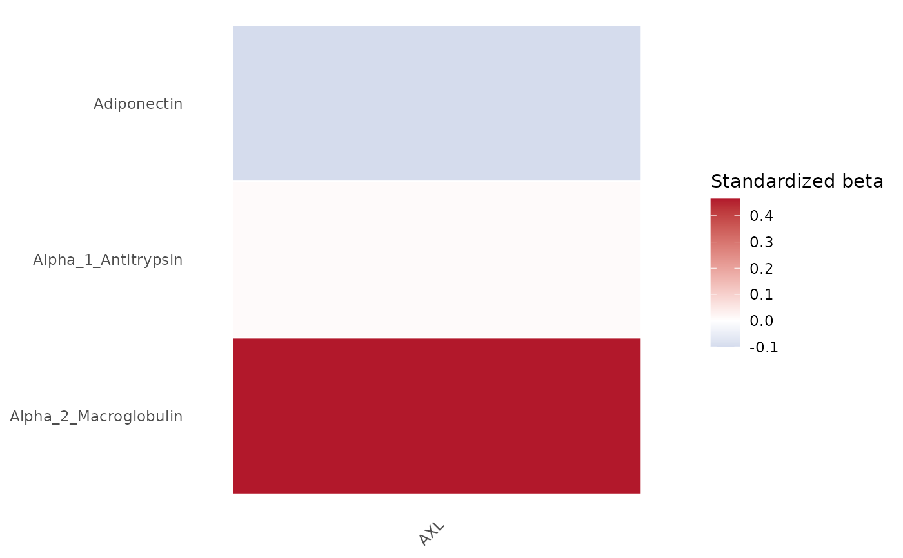

Multivariable regression table
Source:R/MultivariableRegressionTable.R
MultivariableRegressionTable.RdFit one multivariable regression model per outcome and return a stable, label-aware regression object for downstream tables, diagnostics, and plots.
Usage
MultivariableRegressionTable(
data,
outcome_vars,
predictor_vars,
covariates = NULL,
Standardize = TRUE,
Relabel = TRUE,
FDR = TRUE,
FDRAlpha = 0.05,
Method = c("lm", "ridge", "lasso", "elasticnet"),
CVFolds = 10,
Lambda = c("lambda.min", "lambda.1se"),
Seed = 123,
MissingDataStrategy = c("drop_sparse_impute", "impute", "complete_cases",
"drop_sparse_complete_cases"),
MaxMissingPredictor = 0.3,
ImputeMethod = c("median_mode"),
MinCompleteCases = NULL,
Data = lifecycle::deprecated(),
OutcomeVars = lifecycle::deprecated(),
PredictorVars = lifecycle::deprecated(),
Covars = lifecycle::deprecated()
)Arguments
- data
Data frame containing outcomes, predictors, and covariates.
- outcome_vars
Character vector of outcome variable names.
- predictor_vars
Character vector of predictor variable names.
- covariates
Optional character vector of covariate variable names.
- Standardize
Logical. If
TRUE, ordinary models are fit on standardized continuous variables for the primary estimate. Standardized coefficients are always calculated separately regardless of this setting.- Relabel
Logical. If
TRUE, use variable labels fromsjlabelledwhen available.- FDR
Logical. If
TRUE, calculate FDR-adjusted p-values for ordinary regression terms.- FDRAlpha
Numeric FDR threshold retained in metadata.
- Method
Regression method. One of
"lm","ridge","lasso", or"elasticnet".- CVFolds
Number of cross-validation folds for penalized models.
- Lambda
Lambda selection rule for penalized models. One of
"lambda.min"or"lambda.1se".- Seed
Random seed used for deterministic cross-validation folds.
- MissingDataStrategy
Missing-data handling strategy. The default,
"drop_sparse_impute", drops sparse predictors and covariates, then imputes remaining predictor missingness.- MaxMissingPredictor
Maximum allowed missingness proportion for predictors and covariates before they are dropped by sparse-drop strategies. Default is
0.30.- ImputeMethod
Imputation method for predictor/covariate missingness. Currently
"median_mode": median for numeric variables and mode for factor, character, and logical variables.- MinCompleteCases
Optional minimum number of modeling rows required after missing-data handling.
- Data
Deprecated (since 19.15.0). Use
datainstead.- OutcomeVars
Deprecated (since 19.15.0). Use
outcome_varsinstead.- PredictorVars
Deprecated (since 19.15.0). Use
predictor_varsinstead.- Covars
Deprecated (since 19.15.0). Use
covariatesinstead.
Value
A named list with stable components: Models, FormattedTable,
LargeTable, RegressionMatrix, VariableImportanceMatrix,
Predictions, Diagnostics, ModelSummary, Multicollinearity,
Plots, and Metadata. Plots contains ggplot objects built from the
stored result tables and predictions without refitting models.
Examples
# \donttest{
data(SampleData)
result <- MultivariableRegressionTable(
SampleData,
outcome_vars = "AXL",
predictor_vars = c("Adiponectin", "Alpha_1_Antitrypsin", "Alpha_2_Macroglobulin"),
covariates = "age"
)
# Display the regression coefficient matrix plot
result$Plots$RegressionMatrix

# }